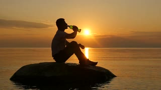
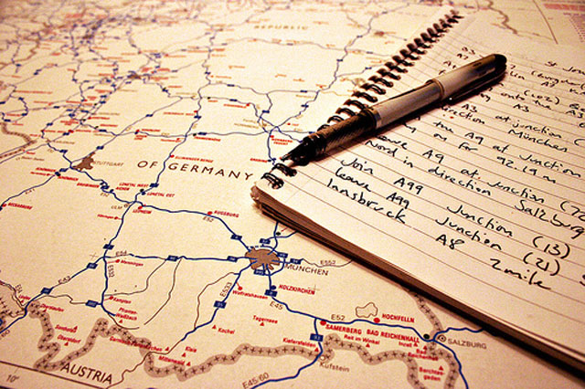

Oportunidade única!!!!
Quer viajar de graça???? Sim isso mesmo totalmente de graça. Essa semana a viva a vida está sorteando uma viagem com um acompanhante para a Disney. Para participar dessa grande novidade é só você vazer a inscrição. Iremos divulgar o resultado no nosso site
FAÇA SUA INSCRIÇÃO
Oportunidade única!!!!
Quer viajar de graça???? Sim isso mesmo totalmente de graça. Essa semana a viva a vida está sorteando uma viagem com um acompanhante para o Beto Carrero. Para participar dessa grande novidade é só você vazer a inscrição. Iremos divulgar o resultado no nosso site
FAÇA SUA INSCRIÇÃO"O mundo é nosso"
Viajar faz bem a saúde
1 Desenvolve suas habilidades
Viajar te impulsiona a desenvolver habilidades que talvez você nem sabia que tinha. Durante a viagem nos deparamos com culturas e costumes diferentes e aprendemos a conviver com as diferenças. Também é uma ótima oportunidade para desenvolver habilidades sociais e fazer novos amigos.
Além disso, viajar faz bem porque te torna mais flexível e paciente para lidar com imprevistos que podem ocorrer. Ninguém gosta de ter problemas com voos ou bagagens, não é mesmo? Mas, é preciso ter flexibilidade ao tratar a situação para que isso não afete todo o passeio.
2 Novas experiências
Conhecer novos lugares, experimentar comidas inusitadas ou mesmo participar de um passeio mais agitado tiram os viajantes da zona de conforto. Viajar aumenta sua disposição para vivenciar algo que você não imaginava ou não teria coragem de fazer.
3 Mais tempo com a família
Se você tem filhos, as viagens de férias são o momento para aproveitar com eles. A correria do dia a dia faz com que refeições e conversas em famílias sejam restritos. Portanto, viajar te proporciona descanso, lazer e mais proximidade com eles.
4 Trás benefícios à saúde
Viajar faz bem demais a saúde. Diversos estudos comprovam que tirar férias é essencial para manter corpo e mente saudável. Uma pesquisa britânica demonstrou que viajar agrega diversos benefícios para a saúde. Entre esses benefícios estão: melhora na qualidade do sono; diminuição da pressão arterial, o que diminui o risco de infarto e o aumento da absorção de vitaminas, que garante mais disposição física.
Um estudo americano acompanhou algumas profissionais por 20 anos e const atou que mulheres que não tiram férias tem maior tendência em ter problemas cardíacos. Já outro estudo, feito com homens, mostrou que a falta de descaso aumenta o risco de doenças coronárias. Sendo assim, evite ficar um longo período sem tirar férias, pois isso pode ser prejudicial para a sua saúde.
5 Melhora o relacionamento
Para casais, o período de viagem também é uma ótima oportunidade para melhorar o relacionamento e a vida sexual. De acordo com a pesquisa britânica citada acima, a diminuição no nível de cortisol (hormônio responsável pelo stress) pode contribuir para aumentar a libido. Além disso, aumenta a energia e melhora o humor.

6 Ajuda a aprender como planejar e se organizar
Fazer uma viagem envolve muitos detalhes: quando, como e por onde ir; onde se hospedar; onde comer; quanto gastar; e por aí vai. São tantas coisas para se observar que ao pensar em sair de casa você terá de se organizar e se planejar para viajar, para que tudo dê certo. Por isso que viajar ajuda a nos tornarmos pessoas mais organizadas, e essa habilidade é fundamental em outros momentos de nossa vida, como no trabalho, por exemplo.
7 Aumenta/amplia o seu conhecimento
Já pensou em conhecer a história da cidade para onde você vai viajar? Quais são as comidas típicas daquele local? Será que está rolando algum evento cultural? Tudo isso pode tornar sua diversão pelo local da viagem mais atrativa, além de aumentar seu conhecimento, enriquecer sua visão de mundo e poder ter muitas histórias para contar aos amigos.
Viajar é preciso
Muitos acham que viajar é preciso para fugir da realidade, para esquecer os problemas do dia-a-dia, para descansar. Ok, de fato, para alguns, até pode ser. Mas, para mim, é uma maneira de me encontrar. De entrar em contato com sentimentos profundos, de descobrir, de aprender e ver o que nunca imaginei que existia.
Viajar é preciso porque saímos do nosso mundo e vemos outras possibilidade de ser e ter. Outras realidades, outras maneiras, outros costumes, outros, outros, outros. E isso contribui para sermos menos preconceituosos, sermos mais humildes e mais empáticos com o próximo.
Viajar é preciso porque o mundo é muito maior do que você imagina e milhões de coisas você só poderá sentir, tocar ou experimentar, se sair da sua bolha e experimentar ir. Simplesmente ir.
Viajar é preciso porque te enriquece. Você gasta dinheiro mas ganha em todos os sentidos: mentalmente, visualmente, energeticamente, organicamente. Viajando você se propõe a conhecer e viver coisas e situações que contribuem para seu crescimento pessoal e experiência de vida.
Viajar é preciso porque não parece ser muito interessante viver sempre as mesmas coisas, nos mesmos lugares, comer as mesmas comidas, ouvir a mesma língua, sentir os mesmos cheiros.
Viajar é preciso, pois, estando ausente, você aprende a dar valor a tudo aquilo que na sua rotina é normal. Você sente falta do seu travesseiro, da comida de um parente, da voz de alguém especial, do seu banheiro, da sua casa. Viajando você aprende a dar mais valor ao que geralmente não sente falta.
Viajar é preciso porque você não controla o que acontece longe da sua realidade. Você lida com imprevistos, com o desconhecido, com mudanças. Saindo da sua velha e boa zona de conforto, você desenvolve habilidades que nem imaginava ter e assim, se reinventa. Já dizia uma velha frase, que a vida só começa quando saímos da nossa zona de conforto. E faz sentido.
Viajar é preciso porque você percebe que a sua cultura está muito mais em você do que imagina. E que toda diversidade cultural existente na terra é o bem simbólico mais precioso que a humanidade carrega.
Viajar é preciso porque o tempo passa e a vida é curta.
A hora de ir é agora e só depende de você. Se abra para o mundo, vá se conectar e se reinventar em vez de criar raízes profundas em um só lugar. Essa Terra é grande demais para isso.
COMENTÁRIOS
Que dms!!! nossa até deu vontade de fazer as malas e sair por ai
AMEIIIIIIIIII